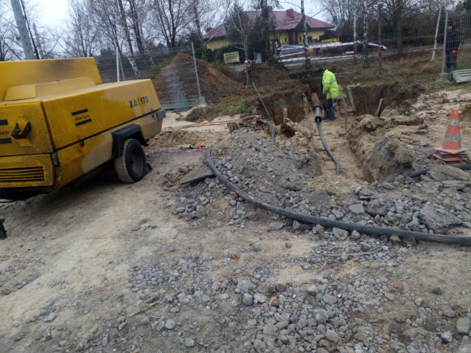
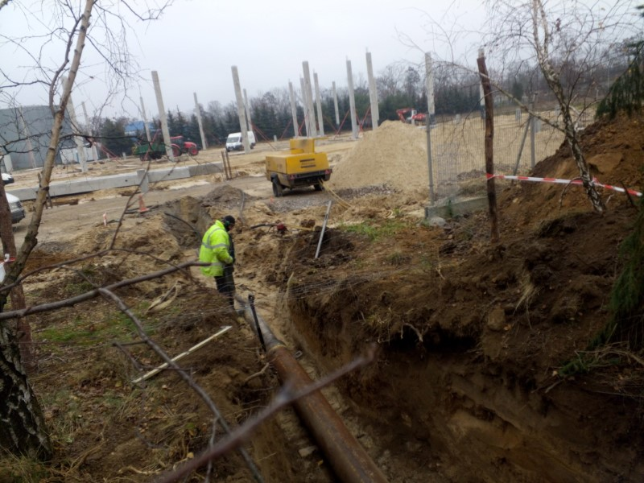
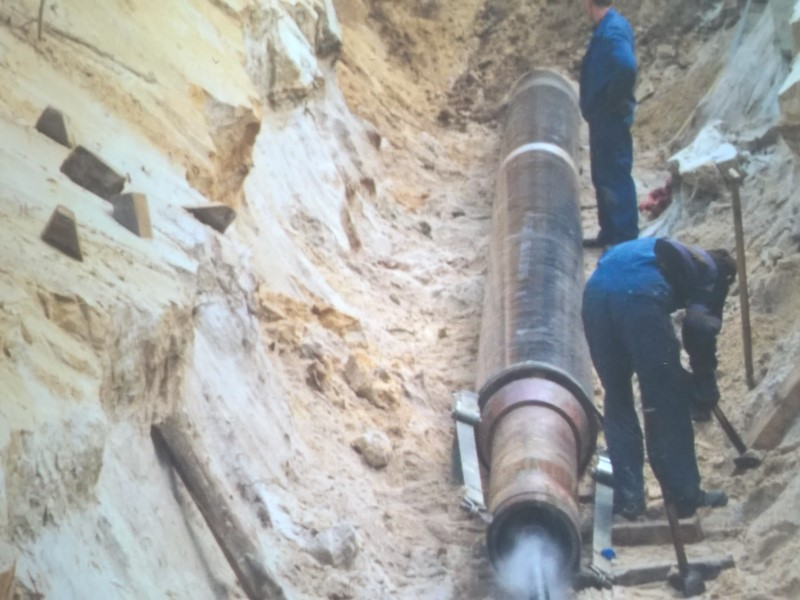

Przedsiębiorstwo Wielobranżowe ROTOPOL istnieje od 1993 roku.
Specjalizujemy się w wykonywaniu przewiertów, przecisków i zgrzewaniu
rur PE. Oferujemy również inne usługi związane z infastrukturą
podziemną.
Wieloletnie doświadczenie
Od początku działalności zajmujemy się wykonawstwem przewiertów i
przecisków. Jesteśmy firmą, która jako jedna z pierwszych w regionie
i w kraju zaczęła wykonywać tego rodzaju usługi.
Wysokiej jakości sprzęt
Posiadamy wysokiej jakości sprzęt, który pozwala na profesjonalne
wykonanie usług.
Gwarancja zadowolenia
Duże doświadczenie i jakość sprzętu pozwala nam na szybkie i sprawne
wykonanie usług, przynosząc zadowolenie naszym klientom.



Usługi
Przewierty sterowane
Wykonujemy przewierty sterowane pod przeszkodami terenowymi typu
drogi, rzeki, tory, place, itp. różnymi wiertnicami w zakresie
średnic od najmniejszych do średnicy fi 600 mm. I długości do 300
mb. Dla wykonania tych usług posiadamy pięć różnych maszyn
przewiertowych.
Przeciski
Wykonujemy przeciski rurami plastikowymi o średnicy do 150 mm i
przeciski rurami stalowymi do średnicy 1200 mm. Przeciski wykonujemy
urządzeniami typu kret i typu młot pneumatyczny. Posiadamy osiem
różnych różnych urządzeń i cztery kompresory o szerokim spektrum
wydajności.
Zgrzewanie rur PE
Zgrzewamy rury doczołowo i elektrooporowo wieloma typami zgrzewarek.
Inne usługi
Podejmujemy się wykonawstwa różnych usług nietypowych związanych z
branżą budowlaną i robotami pod infrastrukturę podziemną.
Permission is hereby granted, free of charge, to any person obtaining a
copy of this software and associated documentation files (the
"Software"), to deal in the Software without restriction, including
without limitation the rights to use, copy, modify, merge, publish,
distribute, sublicense, and/or sell copies of the Software, and to
permit persons to whom the Software is furnished to do so, subject to
the following conditions:
The above copyright notice and this permission notice shall be included
in all copies or substantial portions of the Software.
THE SOFTWARE IS PROVIDED "AS IS", WITHOUT WARRANTY OF ANY KIND,
EXPRESS OR IMPLIED, INCLUDING BUT NOT LIMITED TO THE WARRANTIES OF
MERCHANTABILITY, FITNESS FOR A PARTICULAR PURPOSE AND NONINFRINGEMENT.
IN NO EVENT SHALL THE AUTHORS OR COPYRIGHT HOLDERS BE LIABLE FOR ANY
CLAIM, DAMAGES OR OTHER LIABILITY, WHETHER IN AN ACTION OF CONTRACT,
TORT OR OTHERWISE, ARISING FROM, OUT OF OR IN CONNECTION WITH THE
SOFTWARE OR THE USE OR OTHER DEALINGS IN THE SOFTWARE.